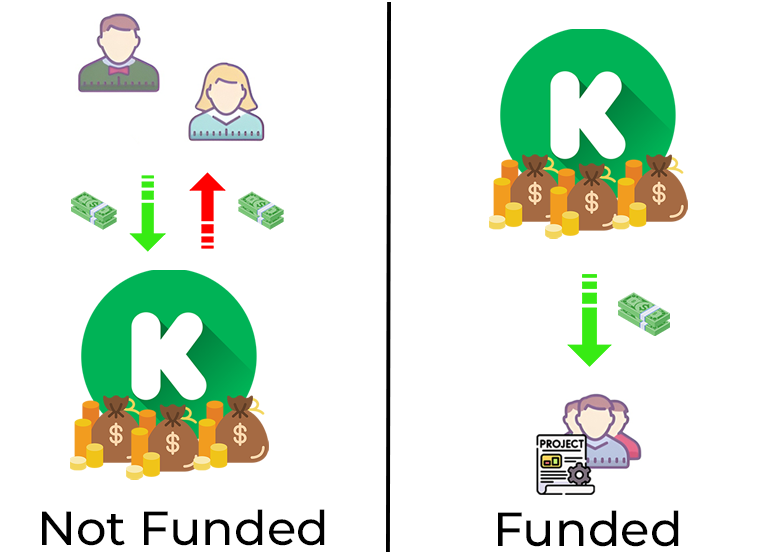
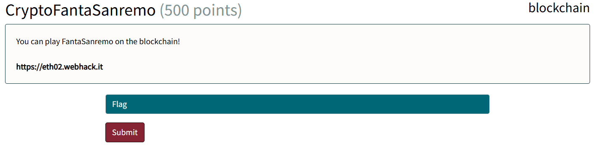
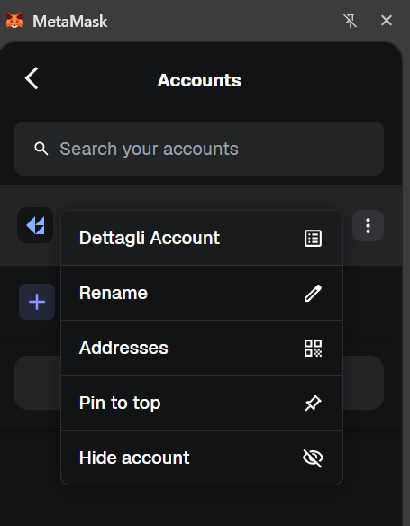
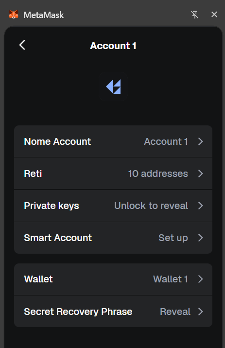

<!-- .slide: data-state="front hide-controls" --> <div id="title">Lab on Smart Contracts</div> <div id="subtitle">Data Privacy and Security</div> <div id="date">Data Science and Management (DASMA)</div> --- ## What is a Smart Contract? <div class="content-center"> <div class="alert alert-recall">It is a <b>computer program</b> stored on the blockchain that executes automatically when conditions are met.</div> <br/> <div class="fragment" data-fragment-index="1"> Example: consider Kickstarter - large fundraising platform for independent projects. </div> <div class="fragment" data-fragment-index="2"> <div class="columns-container columns-center"> <div class="col"> Both parties must trust it to handle their money correctly: - Project successfully funded - the project team expects Kickstarter to release them the funds - Funding goal not reached - supporters expect Kickstarter to refund them <br> Risks of relying on a third party: - Mismanagement - Technical issues - Hacking - ... </div> <div class="col"> <p></p> </div> </div> </div> </div> --- ## What is a Smart Contract? <div class="content-center"> <div class="alert alert-recall">It is a <b>computer program</b> stored on the blockchain that executes automatically when conditions are met.</div> <br/> <div class="columns-container columns-top"> <div class="col"> With smart contracts, we can replicate Kickstarter's model without any third party involvement: - Program a smart contract to hold all received funds until a funding goal is reached - Supporters send their funds directly to the smart contract: - If the goal is met, the contract automatically transfers the funds to the project creator - If the goal is not met, the funds are automatically returned to each supporter <br> Since smart contracts live on a blockchain, the system is fully decentralized → no single entity controls the funds. </div> <div class="col"> ```solidity contract Crowdfund { address creator; uint goal; uint totalFunds; mapping(address => uint) contributions; function contribute() { contributions[msg.sender] += msg.value; totalFunds += msg.value; } function finalize() { if (totalFunds >= goal) { // goal met → pay creator send(creator, totalFunds); } else { // goal not met → refund send(msg.sender, contributions[msg.sender]); } } } ``` </div> </div> </div> --- <!-- .slide: data-auto-animate --> <h2 data-id="title">Why can we trust Smart Contracts?</h2> <div class="content-center"> Because smart contracts are stored on a blockchain, they inherit some of its key properties: - **Immutable**: once deployed, the code cannot be changed - **Deterministic**: same inputs always produce the same outputs - **Decentralized**: runs on all nodes of the network simultaneously - **Atomic**: transactions either fully succeed or fully revert (no partial execution) - **Transparent**: the code and state are publicly visible <br/> <br/> <div class="fragment" data-fragment-index="0"> <div class="alert alert-warning">That said, smart contracts are only as trustworthy as the code they're written with.</div> </div> </div> --- ## Solidity: The Language of Ethereum <div class="content-center"> **Solidity** is the de facto standard programming language for Ethereum smart contracts. - Imperative, object-oriented, inspired by JavaScript/C++ - Compiled into **EVM bytecode** and deployed on the blockchain - **Turing-complete** (unlike Bitcoin's Script language) - In continuous evolution (frequent new versions) <br/> <div class="fragment" data-fragment-index="0"> ```solidity // SPDX-License-Identifier: MIT pragma solidity ^0.8.0; contract SimpleStorage { uint256 public storedValue; function set(uint256 _value) public { storedValue = _value; } function get() public view returns (uint256) { return storedValue; } } ``` </div> </div> --- ## DApps: Decentralized Applications <div class="content-center"> A **DApp** (Decentralized Application) combines: - A **smart contract** backend (deployed on a blockchain e.g. Ethereum) - A **web frontend** (JavaScript/HTML, running in the browser) - A **wallet** (e.g., MetaMask) to sign transactions <br/> <div class="fragment" data-fragment-index="1"> <div class="cell-center"> <!-- PLACEHOLDER: img/dapp-architecture.drawio.png - Diagram showing: Browser (Web3 Frontend) ↔ MetaMask Wallet ↔ Ethereum Network ↔ Smart Contract --> <img src="img/dapp-architecture.drawio.png" style="width: 1500px;"> </div> <br/> **How it works**: the frontend talks to the smart contract through a library (e.g., ethers.js), and the wallet handles the user's identity and transaction signing. </div> </div> --- ## Smart Contract Example: A Simple Faucet <div class="content-center"> A faucet is a contract that dispenses small amounts of ETH to anyone who asks: ```solidity // SPDX-License-Identifier: MIT pragma solidity ^0.8.0; contract Faucet { // Accept any incoming amount receive() external payable {} // Give out ether to anyone who asks function withdraw(uint withdrawAmount) public { // Limit withdrawal amount require(withdrawAmount <= 0.1 ether); // Send the amount to the requester payable(msg.sender).transfer(withdrawAmount); } } ``` <br/> <div class="fragment" data-fragment-index="0"> Key elements: <div class="columns-container columns-center"> <div class="col"> - `receive()`: allows the contract to accept ETH - `msg.sender`: the address of whoever called the function </div> <div class="col"> - `require()`: reverts the transaction if the condition is false - `payable(...).transfer(...)`: sends ETH to an address </div> </div> </div> </div> --- ## Smart Contract Lifecycle <div class="content-center"> 1. **Development:** write the contract in Solidity (e.g., using the Remix web IDE at [remix.ethereum.org](https://remix.ethereum.org)) 2. **Compilation:** the Solidity code is compiled into EVM bytecode 3. **Deployment:** the bytecode is sent as a transaction to the zero address (`0x0`), which triggers the network to create the contract and assign it a **unique address**. 5. **Interaction:** users and other contracts can invoke its functions by sending transactions (state-changing) or calls (read-only). <br/> <div class="fragment" data-fragment-index="0"> Once deployed, the code is **immutable** — bugs cannot be fixed. This makes **security auditing** critical before deployment. </div> </div> --- ## Smart Contract Security Concerns <div class="content-center"> Smart contracts handle real money, so bugs can be **catastrophic**. Common vulnerabilities: - **Re-entrancy**: a malicious contract calls back into the victim contract before the first call finishes (e.g., the DAO hack, 2016 — $60M stolen) - **Integer overflow/underflow**: arithmetic errors in older Solidity versions - **Unchecked external calls**: assuming a call succeeded when it didn't - **Access control issues**: sensitive functions left unguarded, allowing anyone to call them <br/> <div class="fragment" data-fragment-index="0"> <div class="alert alert-warning">What makes this dangerous is immutability — once a vulnerable contract is deployed, it stays vulnerable forever.</div> </div> </div> --- <!-- .slide: data-state="break-blue hide-controls" --> # Interacting with Smart Contracts --- ## Block Explorers: Etherscan <div class="content-center"> A **block explorer** is a web interface to read blockchain data without running a full node. **Etherscan** (https://etherscan.io) is the most popular Ethereum block explorer: - Search for **addresses**, **transactions**, **blocks**, or **contracts** - View transaction history, balances, and token holdings - Read and write to **verified smart contracts** directly from the browser - View contract source code (if verified by the developer) <br/> <div class="fragment" data-fragment-index="0"> For testnets (Sepolia, Goerli), use: - https://sepolia.etherscan.io - https://goerli.etherscan.io </div> </div> --- ## Calling Contracts Programmatically <div class="content-center"> You can interact with contracts using libraries like **web3.py** (Python) or **ethers.js** (JavaScript). <br/> **Python example**: ```python from web3 import Web3 import base64, json w3 = Web3(Web3.HTTPProvider("https://eth-sepolia.g.alchemy.com/v2/YOUR_KEY")) # Minimal ABI - only the function you need abi = [{"inputs":[{"name":"tokenId","type":"uint256"}], "name":"tokenURI","outputs":[{"name":"","type":"string"}], "stateMutability":"view","type":"function"}] contract = w3.eth.contract(address="0x...", abi=abi) uri = contract.functions.tokenURI(0).call() print(uri) ``` <br/> <div class="fragment" data-fragment-index="0"> The ABI (Application Binary Interface) describes the contract's functions and is needed to encode/decode calls. </div> </div> --- ## NFT Metadata: `tokenURI` <div class="content-center"> ERC-721 NFTs store metadata (name, description, image, attributes) via the `tokenURI(uint256 tokenId)` function. The `tokenURI` function returns a **URI** (Uniform Resource Identifier) pointing to the metadata: - **IPFS**: `ipfs://Qm...` — decentralized storage - **HTTP**: `https://example.com/metadata/123.json` — centralized server - **Data URI**: `data:application/json;base64,...` — metadata encoded directly on-chain <br/> <div class="fragment" data-fragment-index="0"> The metadata is typically JSON: ```json { "name": "My NFT #123", "description": "...", "image": "ipfs://...", "attributes": [ {"trait_type": "Color", "value": "Blue"}, {"trait_type": "Rarity", "value": "Legendary"} ] } ``` </div> </div> --- ## RPC Providers: Connecting to the Blockchain <div class="content-center"> To interact with Ethereum from your code, you need to connect to a **node** that has a copy of the blockchain. <br/> A **Web3.HTTPProvider** (or similar) is a connection to an Ethereum node via HTTP/HTTPS: ```python w3 = Web3(Web3.HTTPProvider("https://eth-sepolia.g.alchemy.com/v2/YOUR_KEY")) ``` <br/> <br/> This URL points to an **RPC endpoint** (Remote Procedure Call) — a server that accepts requests like: - `eth_call` — read contract state (no transaction) - `eth_sendRawTransaction` — submit a signed transaction - `eth_getBalance` — check an address's ETH balance - `eth_getTransactionReceipt` — check if a transaction succeeded </div> --- <div class="content-center"> **Why is it needed?** Running your own Ethereum node requires: - Downloading the entire blockchain (1TB for mainnet) - Keeping it synced 24/7 - Significant CPU, RAM, and bandwidth Most developers use **RPC providers** instead: - **Alchemy** (https://alchemy.com) — free tier available - **Infura** (https://infura.io) — popular, free tier - **QuickNode**, **Ankr**, **Chainstack** — alternatives <br/> <div class="fragment" data-fragment-index="0"> The provider acts as a **gateway** to the blockchain: your code sends JSON-RPC requests, the provider's node executes them and returns results. You get all the benefits of a full node without running one yourself. </div> </div> --- ## The Frontend is NOT a Security Boundary <div class="content-center"> A critical principle in blockchain security: **never trust the frontend**. Any restrictions enforced only in JavaScript (client-side) can be trivially bypassed: - **Input validation** (e.g., "max 100 tokens") → send 1000 directly to the contract - **Button disabling** (e.g., "you can only vote once") → call the vote function multiple times If the smart contract doesn't enforce a rule, **the rule doesn't exist**. <br/> <div class="fragment" data-fragment-index="0"> <div class="cell-center"> > *The blockchain doesn't care about your UI. Only the smart contract logic matters.* </div> </div> </div> --- ## Time to Cook <div class="content-center"> </div> --- <!-- .slide: data-state="break-blue hide-controls" --> # CryptoFantaSanremo <div class="content-center"> Blockchain Challenge 02 </div> --- ## CryptoFantaSanremo - Reconnaissance <div class="content-center"> <p></p> <br/> What can we observe? The challenge... - presents a fantasy league DApp where players pick a team of 5 singers and register via a smart contract; - exposes the full contract source code, the ABI, and ready-to-use Python scripts directly from the interface; - awards a Flag NFT to any player whose team score reaches the threshold. </div> --- ## MetaMask - Private Keys <div class="content-center"> <div class="alert alert-hint">Go to Account → Account Details → Private Keys</div> <br/> <br/> <div class="columns-container columns-center"> <div class="col"> <p></p> </div> <div class="col"> <p></p> </div> </div> </div>